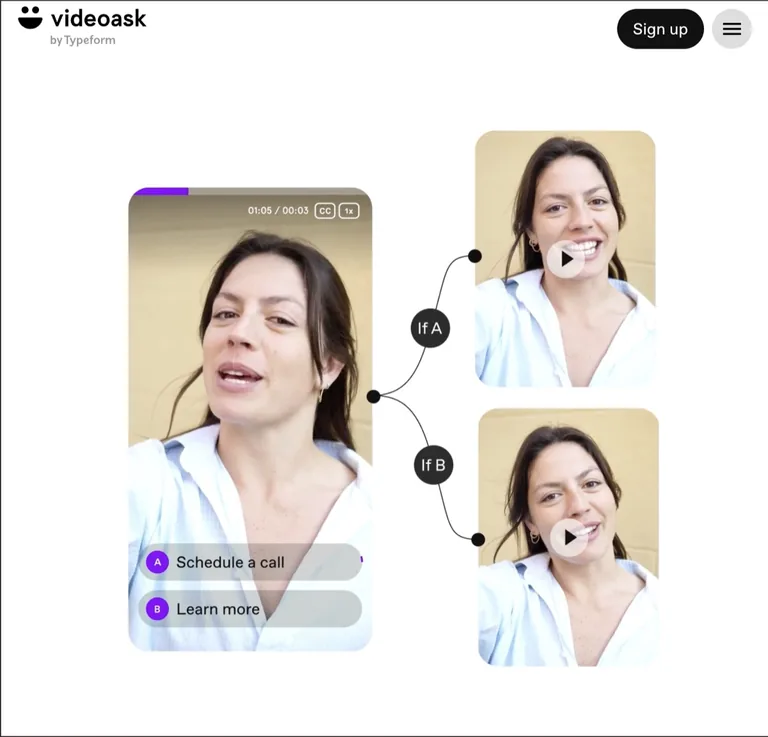
VideoAsk
Millora de l'arquitectura de la informació i del contingut per optimitzar la navegació i l'experiència d'usuari.
Obert a nous projectes
A Digitall Estudi creem dissenys que no només destaquen, sinó que també connecten amb la teva audiència. Cada projecte reflecteix l'essència de la teva marca i les necessitats de qui la fa servir.
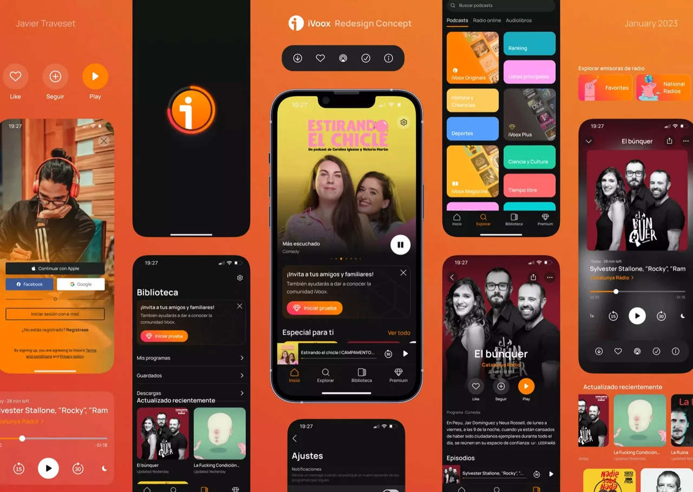
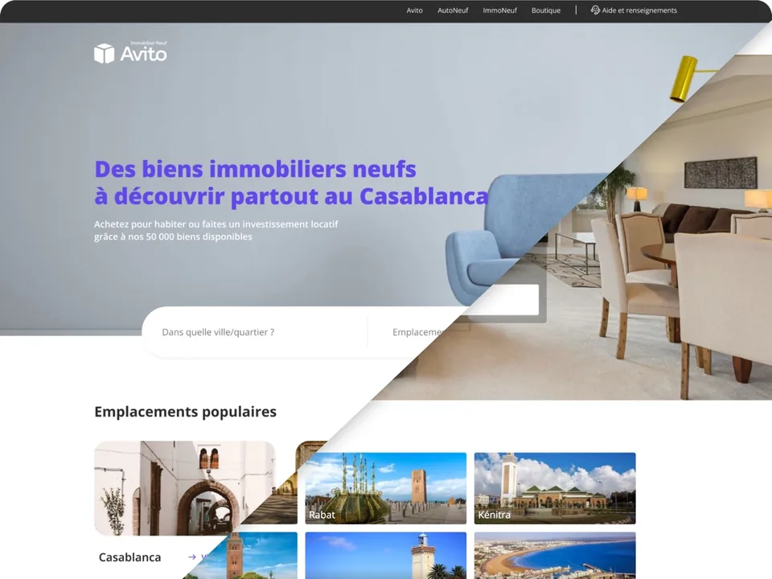
Empreses que ja confien en Digitall
Una selecció

Millora de l'arquitectura de la informació i del contingut per optimitzar la navegació i l'experiència d'usuari.
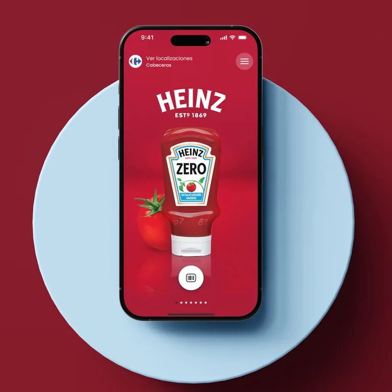
Redisseny integral de l'aplicació per millorar l'experiència d'usuari i adaptar la marca a les tendències actuals.
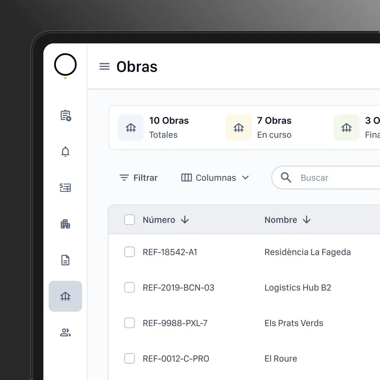
Millora del disseny i de l'experiència d'usuari en un programari de gestió d'obres integrals.
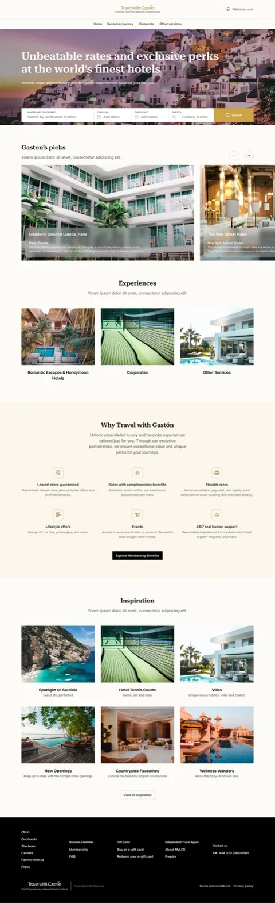
Redisseny integral d'una web de viatges a mida per convertir-la en una plataforma de reserves completa.
Sona familiar?
Del caos a la claredat
Comencem entenent el teu negoci, els teus usuaris i el que necessites. Revisem el que ja tens.
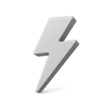
Definim l'abast, els terminis i el preu abans de començar. Sense sorpreses a mitja feina.
Dissenyem i desenvolupem amb revisions contínues i entregues per fases, i seguim amb tu després del llançament.
Què puc fer per la teva marca
Definim des del principi els terminis i l'abast de cada projecte, amb resultats que combinen estètica, funcionalitat i estratègia.
Auditories UX, fluxos d'usuari, aplicacions web i mòbils, sistemes de disseny i prototips. També iteració de producte quan ja està en marxa.
Parlem de disseny digital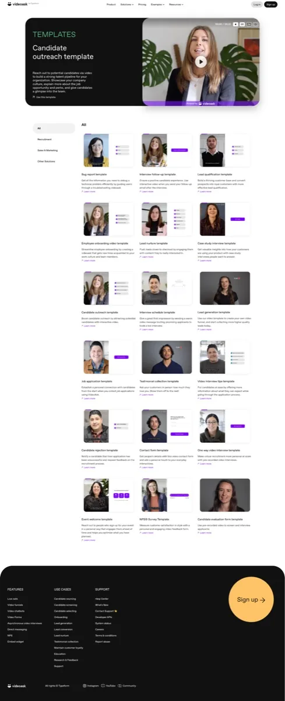
Mapa del lloc i arquitectura d'informació, wireframes, disseny d'alta fidelitat, desenvolupament WordPress adaptable a qualsevol dispositiu i manteniment perquè la web continuï activa.
Parlem de la teva web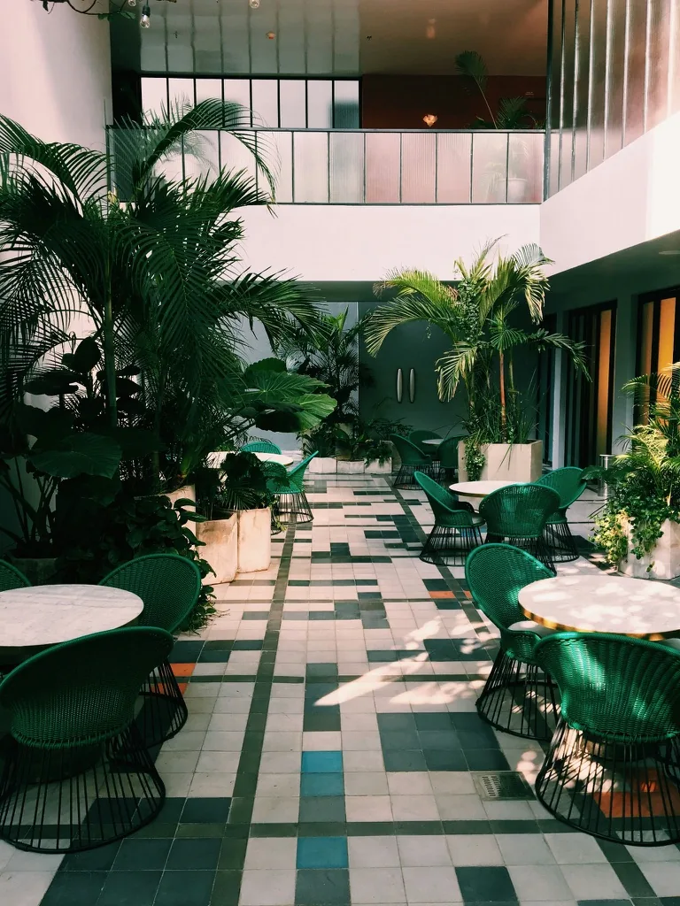
Estratègia de marca, identitat visual, guia de marca, plantilles per a xarxes i peces de llançament. Una base que es pot aplicar a tot.
Parlem d'identitat de marcaAuditoria tècnica, mapa de les preguntes que fa el teu client, correccions a la web en directe, dades estructurades i pàgines pensades per ser citades per les IA. Amb informe mensual de visibilitat.
Parlem de creixementVols saber els terminis estimats? Consulta els temps per tipus de projecte
Abast clar des del principi
Són terminis orientatius per a cada tipus de treball. Cada projecte és únic; quan parlem, ajustem l'abast al calendari i a les teves necessitats.
Productes atractius i funcionals, que connecten l'estètica amb les necessitats i el comportament de les persones.
Una marca es defineix per la seva presència digital. Transmetre la seva identitat i la seva perspectiva per millorar l'experiència de qui la visita.
Una identitat visual i verbal distintiva, amb peces clau de marca fetes a mida i directrius clares.
*Els temps estimats no inclouen caps de setmana, festius ni imprevists. Poden variar segons el calendari i els canvis que vagin apareixent.
El teu projecte no encaixa exactament en aquests serveis? Escriu-me a hola@digitallestudi.com i ajustem terminis, preu i abast.
Plans i manteniment
Manteniment mensual
Una web necessita manteniment com qualsevol eina de treball. Ho fem perquè segueixi segura, actualitzada i amb contingut nou.
A consultar
Parlem del mantenimentProjecte a mida
Ideal si busques una solució concreta, de principi a fi, amb preu i abast acordats.
A mida
Demanar pressupostMés enllà de
Sóc en Javier, Senior Product Designer amb més de 10 anys d'experiència en el desenvolupament i el creixement de productes digitals. Treballo per millorar la comunicació entre les persones i els productes a través d'un disseny d'experiència integral. Lidero cada projecte i treballo amb col·laboradors de confiança quan cal, perquè sempre sàpigues qui respon.
Vols saber una mica més de mi i del teu projecte?
Explica'm què tens en mentResolem els teus dubtes
Si tens més dubtes, pots escriure'm directament.
Comencem entenent l'objectiu, el context i les necessitats. Acordem l'abast i els terminis abans de dissenyar, i revisem amb tu cada entrega.
Disseny digital, web i WordPress, identitat de marca i creixement amb SEO i AEO. A la secció de serveis trobaràs els temps orientatius de cada tipus de projecte.
Actualitzacions, còpies de seguretat, publicació de contingut, gestió de registres DNS i un informe mensual. El domini i el hosting no estan inclosos.
[Per confirmar: qui cobreix les incidències i com s'avisa.]
[Per confirmar: temps de resposta.]
Sí. Si ho cancel·les, reps la web completa: fitxers, còpies de seguretat i accessos, amb una nota de traspàs.
Tu. Els fitxers, el domini i els accessos són sempre teus.
Escriu a hola@digitallestudi.com amb unes línies sobre la teva idea. Et respondré per entendre què necessites.
Ho posem en marxa?
No hi ha formularis: prem el correu i s'obrirà el teu programa de correu habitual.
hola@digitallestudi.com